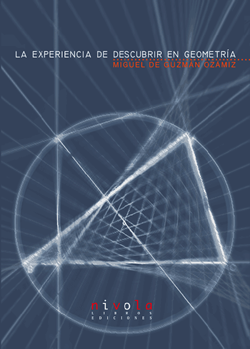
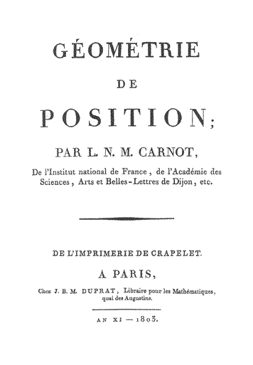

Laboratorio virtual de triángulos con Cabri
Curso 2005-2006
Qiincena 1/15 de Setiembre de 2005
Problema 269.- Sobre bisectrices
Solución de Francisco Javier García Capitán , profesor del IES Álvarez Cubero (Priego de Córdoba) (1 de setiembre de 2005)
El profesor García Capitán edita la página web problemas de matemáticas / bella geometría
Solución de William Rodríguez Chamache. profesor de geometria de la "Academia integral class" Trujillo- Perú (1 de setiembre de 2005)
El profesor William Rodríguez Chamache edita la página web Geometría Interactiva
Solución de Manuel Peña Alcaraz,estudiante de 3º de ESO en el Colegio Portaceli de Sevilla (6 de setiembre de 2005)
Solución de Maite Peña Alcaraz, estudiante de Industriales en la Universidad de Comillas (Madrid) (6 de setiembre de 2005)
Solución de Saturnino Campo Ruiz, profesor del IES Fray Luis de León, de Salamanca (6 de setiembre de 2005).
Solución de F. Damián Aranda Ballesteros profesor de Matemáticas del IES Blas Infante en Córdoba (7 de setiembre de 2005)
Propuesto por Juan Bosco Romero Márquez, profesor colaborador de la Universidad de Valladolid
Problema 270.- Mediana y circunradio
Solución de José María Pedret. Ingeniero naval. Esplugues de Llobregat, Barcelona (1 de setiembre de 2005)
Solución de Francisco Javier García Capitán , profesor del IES Álvarez Cubero (Priego de Córdoba) (1 de setiembre de 2005)
El profesor García Capitán edita la página web problemas de matemáticas / bella geometría
Solución de Ricard Peiró i Estruch Profesor de Matemáticas del IES 1 de Xest (València) (2 de setimbre de 2005) (en valenciano)
Solución deRicard Peiró i Estruch Profesor de Matemáticas del IES 1 de Xest (València) (4 de setiembre de 2005) (en español)
El profesor Ricard Peiró i Estruch edita la página web Triangles
Solución de Saturnino Campo Ruiz, profesor del IES Fray Luis de León, de Salamanca (6 de setiembre de 2005).
Solución de F. Damián Aranda Ballesteros profesor de Matemáticas del IES Blas Infante en Córdoba (6 de setiembre de 2005)
Quincena de 16 de setiembre de 2005 a 30 de setiembre de 2005
Problema 271 .- Cinco puntos en un equilátero
Solución de Francisco Javier García Capitán , profesor del IES Álvarez Cubero (Priego de Córdoba) (16 de setiembre de 2005)
El profesor García Capitán edita la página web problemas de matemáticas / bella geometría
Solución de F. Damián Aranda Ballesteros profesor de Matemáticas del IES Blas Infante en Córdoba (19 de setiembre de 2005)
Solución de Maite Peña Alcaraz, estudiante de Industriales en la Universidad de Comillas (Madrid) (22 de setiembre de 2005)
Propuesto por el profesor José Manuel Arranz San José, profesor de Educación Secundaria de Ponferrada (León)
Problema 272.- Una relación entre inversos de longitudes
Solución de Francisco Javier García Capitán , profesor del IES Álvarez Cubero (Priego de Córdoba) (19 de setiembre de 2005)
El profesor García Capitán edita la página web problemas de matemáticas / bella geometría
Solución de F. Damián Aranda Ballesteros profesor de Matemáticas del IES Blas Infante en Córdoba (19 de setiembre de 2005)
Propuesto por Juan Bosco Romero Márquez, profesor colaborador de la Universidad de Valladolid
Problema 273.- Determinar triángulos
Solución de Francisco Javier García Capitán , profesor del IES Álvarez Cubero (Priego de Córdoba) (16 de setiembre de 2005)
El profesor García Capitán edita la página web problemas de matemáticas / bella geometría
Solución de F. Damián Aranda Ballesteros profesor de Matemáticas del IES Blas Infante en Córdoba (20 de setiembre de 2005)
Quincena del 1 al 15 de octubre de 2005
Propuesto por Juan Bosco Romero Márquez, profesor colaborador de la Universidad de Valladolid
Problema 274.- Baricentros
Solución de José María Pedret. Ingeniero naval. (Esplugas de Llobregat, Barcelona), (2 de octubre de 2005)
Solución de F. Damián Aranda Ballesteros profesor de Matemáticas del IES Blas Infante en Córdoba (3 de octubre de 2005)
Primera solución de Francisco Javier García Capitán , profesor del IES Álvarez Cubero (Priego de Córdoba) (3 de octubre de 2005)
Segunda solución de Francisco Javier García Capitán , profesor del IES Álvarez Cubero (Priego de Córdoba) (6 de octubre de 2005)
El profesor García Capitán edita la web problemas de matemáticas/Bella Geometría
Solución de Saturnino Campo Ruiz, profesor del IES Fray Luis de León, de Salamanca (7 de octubre de 2005).
Problema 275.- Puntos medios
Solución de William Rodríguez Chamache. profesor de geometria de la "Academia integral class" Trujillo- Perú (1 deoctubre de 2005)
El profesor William Rodríguez Chamache tiene la web Geometría Interactiva
Solución de F. Damián Aranda Ballesteros profesor de Matemáticas del IES Blas Infante en Córdoba (2 de octubre de 2005)
Primera solución de Ricard Peiró i Estruch Profesor de Matemáti cas del IES 1 de Xest (València) (2 de ocyubre de 2005) (en valenciano)
Primera solución de Ricard Peiró i Estruch Profesor de Matemáticas del IES 1 de Xest (València) (2 de octubre de 2005) (en español)
Solución de José María Pedret. Ingeniero naval. (Esplugas de Llobregat, Barcelona), (2 de octubre de 2005)
Solución de Francisco Javier García Capitán , profesor del IES Álvarez Cubero (Priego de Córdoba) (3 de octubre de 2005)
El profesor García Capitán edita la web problemas de matemáticas/Bella Geometría
Segunda solución de Ricard Peiró i Estruch Profesor
de Matemáti cas del IES 1 de Xest (València) (4 de octubre de
2005) (en valenciano)
Segunda solución de Ricard Peiró i Estruch Profesor de Matemáticas del IES 1 de Xest (València) (4 de octubre de 2005) (en español)
El profesor Ricard Peiró i Estruch edita la página web Triangles
Solución de Saturnino Campo Ruiz, profesor del IES Fray Luis de León, de Salamanca (7 de octubre de 2005).
Quincena del 16 al 31 de octubre de 2005
Problema 276.- Un punto aleatorio en la circunscrita
Solución de Ricard Peiró i Estruch Profesor de
Matemáti cas del IES 1 de Xest (València) (16 de octubre de 2005)
(en valenciano)
Solución de Ricard Peiró i Estruch Profesor de
Matemáticas del IES 1 de Xest (València) (16 de octubre de 2005)
(en español)
El profesor Ricard Peiró i Estruch edita la página web Triangles
Solución de Francisco Javier García Capitán
, profesor del IES Álvarez Cubero (Priego de Córdoba) (17 de octubre
de 2005)
El profesor García Capitán edita la web problemas de matemáticas/B ella Geometría
Solución de F. Damián Aranda Ballesteros profesor
de Matemáticas del IES Blas Infante en Córdoba (18 de octubre
de 2005)
Solución de William Rodríguez Chamache. profesor
de geometria de la "Academia integral class" Trujillo- Perú
(18 deoctubre de 2005)
El profesor William Rodríguez Chamache tiene la web Geometría
Interactiva
Propuesto por Juan Bosco Romero Márquez, profesor colaborador de la
Universidad de Valladolid
Problema 277. Bisectrices y cevianas; lugares
Solución de José María Pedret. Ingeniero
naval. (Esplugas de Llobregat, Barcelona), (17 de octubre de 2005)
Solución de Francisco Javier García Capitán
, profesor del IES Álvarez Cubero (Priego de Córdoba) (17 de octubre
de 2005)
El profesor García Capitán edita la web problemas de matemáticas/Bella Geometría
Solución de F. Damián Aranda Ballesteros profesor
de Matemáticas del IES Blas Infante en Córdoba (22 de octubre
de 2005)
Solución de William Rodríguez Chamache. profesor
de geometria de la "Academia integral class" Trujillo- Perú
(22 de octubre de 2005)
El profesor William Rodríguez Chamache tiene la web Geometría
Interactiva
Qunicena del 1 al 15 de noviembre de 2005
Problema 278.- Tangente, ángulos y circunferencia circunscrita
Solución de José María Pedret. Ingeniero naval. (Esplugas de Llobregat, Barcelona), (1 de noviembre de 2005)
Solución de William Rodríguez Chamache. profesor de geometria de la "Academia integral class" Trujillo- Perú (5 de noviembre de 2005)
El profesor William Rodríguez Chamache tiene la web Geometría Interactiva
Solución del editor/director 10 de noviembre de 2005
Solución de Maite Peña Alcaraz, estudiante de Industriales en la Universidad de Comillas (Madrid) (15 de noviembre de 2005)
Propuesto por Juan Bosco Romero Márquez, profesor colaborador de la Universidad de Valladolid
Problema 279.- Transformaciones, paralelismos
Solución de José María Pedret. Ingeniero naval. (Esplugas de Llobregat, Barcelona), (3 de noviembre de 2005)
Quincena del 16 al 30 de noviembre de 2005
Propuesto por José Carlos Chavez Sandoval, estudiante peruano de Matemática Pura en la Universidad Nacional Mayor de San Marcos
Problema 280.- Teorema de
Seydewitz.
Solución de José María Pedret. Ingeniero naval. (Esplugas de Llobregat, Barcelona), (17 de noviembre de 2005)
Solución de Saturnino Campo Ruiz, profesor del IES Fray Luis de León, de Salamanca (22 de noviembre de 2005).
Problema 281.- Semejanzas
Solución de Ricard Peiró i Estruch Profesor de Matemáti cas del IES 1 de Xest (València) (16 de noviembre de 2005) (en valenciano)
Solución de Ricard Peiró i Estruch Profesor de Matemáticas del IES 1 de Xest (València) (16 de noviembre de 2005) (en español)
El profesor Ricard Peiró i Estruch edita la página web Triangles
Solución de Saturnino Campo Ruiz, profesor del IES Fray Luis de León, de Salamanca (22 de noviembre de 2005).
Solución de Francisco Javier García Capitán , profesor del IES Álvarez Cubero (Priego de Córdoba) (24 de novienbre de 2005)
El profesor García Capitán edita la web problemas de matemáticas/Bella Geometría
Quincena del 1 de diciembre al 15 de diciembre
Propuesto por Juan Bosco Romero Márquez, profesor colaborador de la Universidad de Valladolid
Problema 282.- Triángulo equilátero inscrito en una circunferencia
Solución de José María Pedret. Ingeniero naval. (Esplugas de Llobregat, Barcelona), (2 de diciembre de 2005)
Solución de F. Damián Aranda Ballesteros profesor de Matemáticas del IES Blas Infante en Córdoba (2 de diciembre de 2005)
Solución de Ricard Peiró i Estruch Profesor de Matemáti cas del IES 1 de Xest (València) (2 de diciembre de 2005) (en valenciano)
Solución de Ricard Peiró i Estruch Profesor de Matemáticas del IES 1 de Xest (València) (2 de diciembre de 2005) (en español)
El profesor Ricard Peiró i Estruch edita la página web Triangles
El director agradece al profesor Peiró la referencia de que este problema es una restricción del 147, publicado en marzo de 2004
Solución de Francisco Javier García Capitán , profesor del IES Álvarez Cubero (Priego de Córdoba) (8 dediciembre de 2005)
El profesor García Capitán edita la web problemas de matemáticas/Bella Geometría
Solución de Maite Peña Alcaraz, estudiante de Industriales en la Universidad de Comillas (Madrid) (12 de diciembre de 2005)
Solución de Saturnino Campo Ruiz, profesor del IES Fray Luis de León, de Salamanca (19 de enero de 2006).
Problema 283.- Triángulo rectángulo
Solución de José María Pedret. Ingeniero naval. (Esplugas de Llobregat, Barcelona), (1 de diciembre de 2005)
Solución de F. Damián Aranda Ballesteros profesor de Matemáticas del IES Blas Infante en Córdoba (2 de diciembre de 2005)
Solución de Maite Peña Alcaraz, estudiante de Industriales en la Universidad de Comillas (Madrid) (7 de diciembre de 2005)
Solución de Francisco Javier García Capitán , profesor del IES Álvarez Cubero (Priego de Córdoba) (8 de diciembre de 2005)
El profesor García Capitán edita la web problemas de matemáticas/Bella Geometría
Propuesto por Francisco Javier García Capitán , profesor del IES Álvarez Cubero (Priego de Córdoba)
Problema 284.- Construcción de un triángulo
Solución de José María Pedret. Ingeniero naval. (Esplugas de Llobregat, Barcelona), (1 de diciembre de 2005)
Solución de F. Damián Aranda Ballesteros profesor de Matemáticas del IES Blas Infante en Córdoba (2 de diciembre de 2005)
Solución de Francisco Javier García Capitán , profesor del IES Álvarez Cubero (Priego de Córdoba) (10 de diciembre de 2005)
El profesor García Capitán edita la web problemas de matemáticas/Bella Geometría
Solución de William Rodríguez Chamache. profesor de geometria de la "Academia integral class" Trujillo- Perú (11 de diciembre de 2005)
El profesor William Rodríguez Chamache edita la página web Geometría Interactiva
EXTRA del 16 de diciembre de 2005 al 15 de enero de 2006
Propuesto por Juan Bosco Romero Márquez, profesor colaborador de la Universidad de Valladolid
Problema 285 Un treiángulo rectángulo, la circunferencia circunscrita y una ceviana
Solución de Francisco Javier García Capitán , profesor del IES Álvarez Cubero (Priego de Córdoba) (17 de diciembre de 2005)
El profesor García Capitán edita la web problemas de matemáticas/Bella Geometría
Solución de José María Pedret. Ingeniero naval. (Esplugas de Llobregat, Barcelona), (17 de diciembre de 2005)
Solución de Saturnino Campo Ruiz, profesor del IES Fray Luis de León, de Salamanca (9 de enero de 2006).
Propuesto por José María Pedret Ingeniero Naval. (Esplugas de Llobregat)
Problema 286. Tres circunferencias
Solución de José María Pedret. Ingeniero naval. (Esplugas de Llobregat, Barcelona), (16 de diciembre de 2005)
Solución de Saturnino Campo Ruiz, profesor del IES Fray Luis de León, de Salamanca (9 de enero de 2006)
Problema 287. Equilátero. Proyecciones
Solución de Ricard Peiró i Estruch Profesor de Matemáticas del IES 1 de Xest (València) (17 de diciembre de 2005) (en valenciano)
Solución de Ricard Peiró i Estruch Profesor de Matemáticas del IES 1 de Xest (València) (17 de diciembre de 2005) (en español)
El profesor Ricard Peiró i Estruch edita la página web Triangles
Solución de Francisco Javier García Capitán , profesor del IES Álvarez Cubero (Priego de Córdoba) (28 de diciembre de 2005)
El profesor García Capitán edita la web problemas de matemáticas/Bella Geometría
Solución del editor (10 de enero de 2006)
Problema 288. Perímetro de un triángulo rectángulo
Solución de Manuel Peña Alcaraz, estudiante de 4º de ESO en el Colegio Portaceli de Sevilla (30 de diciembre de 2005)
Propuesto por Luís Lopes
Problema 289. Consrucción de un triángulo con tres datos
Solución de José María Pedret. Ingeniero naval. (Esplugas de Llobregat, Barcelona), (18 de diciembre de 2005)
Solución de Francisco Javier García Capitán , profesor del IES Álvarez Cubero (Priego de Córdoba) (28 dediciembre de 2005)
El profesor García Capitán edita la web problemas de matemáticas/Bella Geometría
Propuesto por David Benítez Mojica y Nora Lucia Leija Mendoza, profesores de la Universidad Autónoma de Coahuila (Méjico)
Problema 290.- Rectas de Euler en triángulos simétricos
Solución deDavid Benítez Mojica y Nora Lucia Leija Mendoza de la Universidad Autónoma de Coahuila (16 de diciembre de 2005)
Solución de Francisco Javier García Capitán , profesor del IES Álvarez Cubero (Priego de Córdoba) (28 de diciembre de 2005)
El profesor García Capitán edita la web problemas de matemáticas/Bella Geometría
Solución de Saturnino Campo Ruiz, profesor del IES Fray Luis de León, de Salamanca (9 de enero de 2006)
Solución del editor (10 de enero de 2006)
Qincena del 16 al 31 de enero de 2006
Problema 291
Dos lados y una mediana.
Solución de Ricard Peiró i Estruch Profesor de Matemáticas del IES 1 de Xest (València) (16 de enero de 2006) (en valenciano)
Solución de Ricard Peiró i Estruch Profesor de Matemáticas del IES 1 de Xest (València) (16 de enero de 2006) (en español)
El profesor Ricard Peiró i Estruch edita la página web Triangles
Solución de Francisco Javier García Capitán , profesor del IES Álvarez Cubero (Priego de Córdoba) (17 de enero de 2006)
El profesor García Capitán edita la web problemas de matemáticas/Bella Geometría
Solución de Correa Pablo Ariel.Profesor del Colegio del Centenario. Buenos Aires, Argentina (22 de enero de 2006)
Solución de William Rodríguez Chamache. profesor de geometria de la "Academia integral class" Trujillo- Perú (24 de enero de 2006)
El profesor William Rodríguez Chamache edita la página web Geometría Interactiva
Propuesto por Juan Bosco Romero Márquez, profesor colaborador de la Universidad de Valladolid
Problema 292
Tres rectas notables coinicdentes.
Solución de José María Pedret. Ingeniero naval. (Esplugas de Llobregat, Barcelona), (16 de enero de 2006)
Solución de Ricard Peiró i Estruch Profesor de Matemáticas del IES 1 de Xest (València) (16 de enero de 2006) (en valenciano)
Solución de Ricard Peiró i Estruch Profesor de Matemáticas del IES 1 de Xest (València) (16 de enero de 2006) (en español)
El profesor Ricard Peiró i Estruch edita la página web Triangles
Solución de Francisco Javier García Capitán , profesor del IES Álvarez Cubero (Priego de Córdoba) (17 de enero de 2006)
El profesor García Capitán edita la web problemas de matemáticas/Bella Geometría
Solución de Correa Pablo Ariel.Profesor del Colegio del Centenario. Buenos Aires, Argentina (22 de enero de 2006)
Propuesto por Juan Carlos Salazar, profesor de Geometría del Equipo Olímpico de Venezuela.(Puerto Ordaz)
Problema 293
Circunferencias, radios
Solución de Juan Carlos Salazar, profesor de Geometría del Equipo Olímpico de Venezuela.(Puerto Ordaz ) (16 de enero de 2006)
Solución de Francisco Javier García Capitán , profesor del IES Álvarez Cubero (Priego de Córdoba) (16 de enero de 2006)
El profesor García Capitán edita la web problemas de matemáticas/Bella Geometría
Problema 294.
El punto de Miquel
Solución de Ricard Peiró i Estruch Profesor de Matemáticas del IES 1 de Xest (València) (1 de febrero de 2006) (en valenciano)
Solución de Ricard Peiró i Estruch Profesor de Matemáticas del IES 1 de Xest (València) (16 de febrero de 2006) (en español)
El profesor Ricard Peiró i Estruch edita la página web Triangles
Solución de William Rodríguez Chamache. profesor de geometria de la "Academia integral class" Trujillo- Perú (2 de febrero de 2006)
El profesor William Rodríguez Chamache edita la página web Geometría Interactiva
Propuesto por Juan Bosco Romero Márquez, profesor colaborador de la Universidad de Valladolid
Problema 295.
Probabilidades
Solución de José María Pedret. Ingeniero naval (apartado a). (Esplugas de Llobregat, Barcelona), (2 de febrero de 2006)
Solución de Francisco Javier García Capitán , profesor del IES Álvarez Cubero (Priego de Córdoba) (2 de febrero de 2006)
El profesor García Capitán edita la web problemas de matemáticas/Bella Geometría
Quincena del 15 al 28 de febrero de 2006
Propuesto por Juan Bosco Romero Márquez, profesor colaborador de la Universidad de Valladolid
Problema 296.- Relaciones entre áreas
Solución de Ricard Peiró i Estruch Profesor de Matemáticas del IES 1 de Xest (València) (17 de febrero de 2006) (en valenciano)
Solución de Ricard Peiró i Estruch Profesor de Matemáticas del IES 1 de Xest (València) (17 de febrero de 2006) (en español)
El profesor Ricard Peiró i Estruch edita la página web Triangles
Solución de Correa Pablo Ariel.Profesor del Colegio del Centenario. Buenos Aires, Argentina (19 de febrero de 2006)
Solución de Francisco Javier García Capitán , profesor del IES Álvarez Cubero (Priego de Córdoba) (21 de febrero de 2006)
El profesor García Capitán edita la web problemas de matemáticas/Bella Geometría
Propuesto por Juan Carlos Salazar, profesor de Geometría del Equipo Olímpico de Venezuela.(Puerto Ordaz)
Problema 297.- Alineaciones de tres puntos
Solución de Ángel Montesdeoca Delgado, profesor del Departamento de Matemática Fundamental, Sección de Geometría y Topología, Universidad de La Laguna (4 de febrero de 2008).
Problema 298.- Sobre el equilátero
Solución de Ricard Peiró i Estruch Profesor de Matemáticas del IES 1 de Xest (València) (15 de febrero de 2006) (en valenciano)
Solución de Ricard Peiró i Estruch Profesor de Matemáticas del IES 1 de Xest (València) (15 de febrero de 2006) (en español)
El profesor Ricard Peiró i Estruch edita la página web Triangles
Solución de Correa Pablo Ariel.Profesor del Colegio del Centenario. Buenos Aires, Argentina (19 de febrero de 2006)
Quincena del 1 al 15 de marzo de 2006
299.- Ángulos en un isósceles
Solución de Manuel Peña Alcaraz,estudiante de 4 º de ESO en el Colegio Portaceli de Sevilla (27 de marzo de 2006)
Propuesto por Juan Bosco Romero Márquez, profesor colaborador de la Universidad de Valladolid
300.- Cevianas
Solución de Francisco Javier García Capitán , profesor del IES Álvarez Cubero (Priego de Córdoba) (2 de marzo de 2006)
El profesor García Capitán edita la web problemas de matemáticas/Bella Geometría
Solución de José María Pedret. Ingeniero naval. (Esplugas de Llobregat, Barcelona), (2 de marzo de 2006)
Solución de Saturnino Campo Ruiz, profesor del IES Fray Luis de León, de Salamanca (6 de marzo de 2006)
300 a EXTRA: Redescubrir en geometría

Francisco Javier García Capitán , profesor del IES Álvarez Cubero (Priego de Córdoba)
El profesor García Capitán edita la web problemas de matemáticas/Bella Geometría
300b EXTRA: Teorema de Carnot

José María Pedret. Ingeniero Naval (Esplugas de Llobregat, Barcelona)
Propuesto por Juan Carlos Salazar, profesor de Geometría del Equipo Olímpico de Venezuela.(Puerto Ordaz)
301.- Circunferencias en un triángulo rectángulo
Solución de Francisco Javier García Capitán , profesor del IES Álvarez Cubero (Priego de Córdoba) (3 de marzo de 2006)
El profesor García Capitán edita la web problemas de matemáticas/Bella Geometría
Solución de José María Pedret. Ingeniero naval. (Esplugas de Llobregat, Barcelona), (6 de marzo de 2006)
Solución de Juan Carlos Salazar, profesor de Geometría del Equipo Olímpico de Venezuela.(Puerto Ordaz)(10 de marzo de 2006)
Quincena del 16 al 31 de marzo de 2006
Propuesto por Paul Yiu, con la colaboración del "correo" de Juan Carlos Salazar.
El profesor Paul Yiu tiene la página web Geometry
302 Circunferencias en un rectángulo
Solución de Francisco Javier García Capitán , profesor del IES Álvarez Cubero (Priego de Córdoba) (16 de marzo de 2006)
El profesor García Capitán edita la web problemas de matemáticas/Bella Geometría
Propuesto por José María Pedret
303. Dividir la área un triángulo según una razón dada
Solución de José María Pedret. Ingeniero naval. (Esplugas de Llobregat, Barcelona), (16 de marzo de 2006)
Solución de Francisco Javier García Capitán , profesor del IES Álvarez Cubero (Priego de Córdoba) (17 de marzo de 2006)
El profesor García Capitán edita la web problemas de matemáticas/Bella Geometría
Solución parcial referida a un vértice de Manuel Peña Alcaraz,estudiante de 4 º de ESO en el Colegio Portaceli de Sevilla (29 de marzo de 2006)
Propuesto por Juan Bosco Romero Márquez
304. A partir de un rectángulo, con equiláteros.
Solución de Ricard Peiró i Estruch Profesor de Matemáticas del IES 1 de Xest (València) (16 de marzo de 2006) (en valenciano)
Solución de Ricard Peiró i Estruch Profesor de Matemáticas del IES 1 de Xest (València) (16 de marzo de 2006) (en español)
El profesor Ricard Peiró i Estruch edita la página web Triangles
Solución de Francisco Javier García Capitán , profesor del IES Álvarez Cubero (Priego de Córdoba) (16 de marzo de 2006)
El profesor García Capitán edita la web problemas de matemáticas/Bella Geometría
Solución de José María Pedret. Ingeniero naval. (Esplugas de Llobregat, Barcelona), (17 de marzo de 2006)
Solución de William Rodríguez Chamache. profesor de geometria de la "Academia integral class" Trujillo- Perú (27 de marzo de 2006)
El profesor William Rodríguez Chamache edita la página web Geometría Interactiva
Quincena del 1 al 15 de abril de 2006
Propuesto por Juan Bosco Romero Márquez,
profesor colaborador de la Universidad de Valladolid
Problema 305.- Una alineación
Solución de Francisco Javier García Capitán , profesor del IES Álvarez Cubero (Priego de Córdoba) (1 de abril de 2006)
El profesor García Capitán edita la página web problemas de matemáticas / bella geometría
Solución de José María Pedret. Ingeniero naval. (Esplugas de Llobregat, Barcelona), (2 de abril de 2006)
Solución de Saturnino Campo Ruiz, profesor del IES Fray Luis de León, de Salamanca (4 de abril de 2006)
Propuesto por Juan Carlos Salazar, profesor de Geometría del Equipo Olímpico de Venezuela.(Puerto Ordaz)
Problema 306.- En un equilátero
Solución de Francisco Javier García Capitán , profesor del IES Álvarez Cubero (Priego de Córdoba) (2 de abril de 2006)
El profesor García Capitán edita la página web problemas de matemáticas / bella geometría
Solución de José María Pedret. Ingeniero naval. (Esplugas de Llobregat, Barcelona), (3 de abril de 2006)
Solución de Saturnino Campo Ruiz, profesor del IES Fray Luis de León, de Salamanca (4 de abril de 2006)
Solución de la primera parte de Ricard Peiró i Estruch Profesor de Matemáticas del IES 1 de Xest (València) (7 de abril de 2006) (en valenciano)
Solución de la primera parte de Ricard Peiró i Estruch Profesor de Matemáticas del IES 1 de Xest (València) (7 de abril de 2006) (en español)
El profesor Ricard Peiró i Estruch edita la página web Triangles
Solución de la primera parte de William Rodríguez Chamache. profesor de geometria de la "Academia integral class" Trujillo- Perú (12 de abril de 2006)
El profesor William Rodríguez Chamache edita la página web Geometría Interactiva
Quincena del 16 de abril al 30 de abril de 2006
Problema 307. Simetrías centrales. Áreas.
Solución de José María Pedret. Ingeniero naval. (Esplugas de Llobregat, Barcelona), (17 de abril de 2006)
Solución de Saturnino Campo Ruiz, profesor del IES Fray Luis de León, de Salamanca (17 de abril de 2006)
Solución de Ricard Peiró i Estruch Profesor de Matemáticas del IES 1 de Xest (València) (17 de abril de 2006) (en valenciano)
Solución de Ricard Peiró i Estruch Profesor de Matemáticas del IES 1 de Xest (València) (17 de abril de 2006) (en español)
El profesor Ricard Peiró i Estruch edita la página web Triangles
Solución de William Rodríguez Chamache. profesor de geometria de la "Academia integral class" Trujillo- Perú (18 de abril de 2006)
El profesor William Rodríguez Chamache edita la página web Geometría Interactiva
Problema 308. Inradio, Exinradios . Área.
Solución de Ricard Peiró i Estruch Profesor de Matemáticas del IES 1 de Xest (València) (17 de abril de 2006) (en valenciano)
Solución de Ricard Peiró i Estruch Profesor de Matemáticas del IES 1 de Xest (València) (17 de abril de 2006) (en español)
El profesor Ricard Peiró i Estruch edita la página web Triangles
Solución de Saturnino Campo Ruiz, profesor del IES Fray Luis de León, de Salamanca (17 de abril de 2006)
Solución de José María Pedret. Ingeniero naval. (Esplugas de Llobregat, Barcelona), (17 de abril de 2006)
Solución de la primera parte de William Rodríguez Chamache. profesor de geometria de la "Academia integral class" Trujillo- Perú (19 de abril de 2006)
El profesor William Rodríguez Chamache edita la página web Geometría Interactiva
Quincena del 1 de mayo de 2006 al 15 de mayo de 2006
Propuesto por José Carlos Chavez Sandoval, estudiante peruano de Matemática Pura en la Universidad Nacional Mayor de San Marcos teniendo en cuenta el mensaje de Darij Grinberg a Mathlinks.
Problema 309. Una concurrencia de tres rectas
Solución de François Rideau, Maitre de Conférences à l'Université de Paris 7,.7 de mayo de 2006
Solución de Francisco Javier García Capitán , profesor del IES Álvarez Cubero (Priego de Córdoba) (9 de mayo de 2006)
El profesor García Capitán edita la página web problemas de matemáticas / bella geometría
Problema 310. Alturas
Solución de Ricard Peiró i Estruch Profesor de Matemáticas del IES 1 de Xest (València) (1 de mayo de 2006) (en valenciano)
Solución de Ricard Peiró i Estruch Profesor de Matemáticas del IES 1 de Xest (València) (1 de mayo de 2006) (en español)
El profesor Ricard Peiró i Estruch edita la página web Triangles
Solución de William Rodríguez Chamache. profesor de geometria de la "Academia integral class" Trujillo- Perú (2 de mayo de 2006)
El profesor William Rodríguez Chamache edita la página web Geometría Interactiva
Solución de William Rodríguez Chamache. [SEGUNDA] profesor de geometria de la "Academia integral class" Trujillo- Perú, con su alumno Frank Guiuseepi Coronado Idrogo que cursa el cuarto de secunadria del colegio integral Class (3de mayo de 2006)
Solución de Saturnino Campo Ruiz, profesor del IES Fray Luis de León, de Salamanca (4 de mayo de 2006)
Quincena del 16 de mayo de 2006 al 31 de mayo de 2006
Propuesto por François Rideau, Maitre de Conférences à l'Université de Paris 7
311.- Una particularización de un problema de Gray
El problema 39 de este Laboratorio
Solución del director (25 de mayo de 2006)
Propuesto por William Rodríguez Chamache. profesor de geometria de la "Academia integral class" Trujillo- Perú
312.-Un cuadrilátero concíclico
Solución del director, de algunos casos (25 de mayo de 2006)
Solución de William Rodríguez Chamache, profesor de geometria de la "Academia integral class" Trujillo- Perú, con su alumno Frank Guiuseepi Coronado Idrogo que cursa el cuarto de secunadria del colegio integral Class (2 de junio de 2006)
El profesor William Rodríguez Chamache edita la página web Geometría Interactiva
Quincena del 1 al 15 de junio de 2006
Propuesto por Juan Bosco Romero Márquez
313.- Sobre una ceviana, y un rectángulo
Solución de Francisco Javier García Capitán , profesor del IES Álvarez Cubero (Priego de Córdoba) (2 de junio de 2006)
El profesor García Capitán edita la página web problemas de matemáticas / bella geometría
Solución de Saturnino Campo Ruiz, profesor del IES Fray Luis de León, de Salamanca (10 de junio de 2006)
314.- Bisectrices
Solución de Ricard Peiró i Estruch Profesor de Matemáticas del IES 1 de Xest (València) (1 de junio de 2006) (en valenciano)
Solución de Ricard Peiró i Estruch Profesor de Matemáticas del IES 1 de Xest (València) (1 de junio de 2006) (en español)
El profesor Ricard Peiró i Estruch edita la página web Triangles
Solución de José María Pedret. Ingeniero naval. (Esplugas de Llobregat, Barcelona), (1 de junio de 2006)
Solución de Francisco Javier García Capitán , profesor del IES Álvarez Cubero (Priego de Córdoba) (1 de junio de 2006)
El profesor García Capitán edita la página web problemas de matemáticas / bella geometría
Solución de Saturnino Campo Ruiz, profesor del IES Fray Luis de León, de Salamanca (10 de junio de 2006)
Quincena del 16 al 30 de junio de 2006
Propuesto por José Carlos Chavez Sandoval, estudiante peruano de Matemática Pura en la Universidad Nacional Mayor de San Marcos
Problema 315. Cónicas polares y perspectiva
Solución de José María Pedret. Ingeniero naval. (Esplugas de Llobregat, Barcelona), (16 de junio de 2006)
Solución de Saturnino Campo Ruiz, profesor del IES Fray Luis de León, de Salamanca (16 de junio de 2006)
Solución de Francisco Javier García Capitán , profesor del IES Álvarez Cubero (Priego de Córdoba) (22 de junio de 2006)
El profesor García Capitán edita la página web problemas de matemáticas / bella geometría
Segunda solución de José María Pedret. Ingeniero naval. (Esplugas de Llobregat, Barcelona), (2 de agosto de 2006)
Problema 316. Primer y segundo punto de Brocard
Solución de Saturnino Campo Ruiz, profesor del IES Fray Luis de León, de Salamanca (22 de junio de 2006)
Edición veraniega 1 de julio 31 de agosto de 2006
Propuesto por Ricard Peiró i Estruch Profesor de Matemáticas del IES 1 de Xest (València)
Problema 317. Alturas y bisectrices
Solución de José María Pedret. Ingeniero naval. (Esplugas de Llobregat, Barcelona), (2 de julio de 2006)
Solución de Ricard Peiró i Estruch Profesor de Matemáticas del IES 1 de Xest (València) (3 de julio de 2006) (en valenciano)
Solución de Ricard Peiró i Estruch Profesor de Matemáticas del IES 1 de Xest (València) (3 de julio de 2006) (en español)
El profesor Ricard Peiró i Estruch edita la página web Triangles
Solución del director (20 de julio de 2006)
Solución de María Calvo Cervera, estudiante de primero de Matemáticas en Granada (25 de julio de 2006)
Solución de Mark Tudosi, geómetra aficionado, experto en ordenadores, Nueva York City (17 de septiembre de 2006)
Propuesto por Juan Bosco Romero Márquez, profesor colaborador de la Universidad de Valladolid
Problema 318. Relaciones en un triángulo con un ángulo de 60º
Solución de José María Pedret. Ingeniero naval. (Esplugas de Llobregat, Barcelona), (2 de julio de 2006)
Solución del director, de las dos primeras propiedades (20 de julio de 2006)
Propuesta de José Carlos Chávez Sandoval, estudiante peruano de Matemática Pura en la Universidad Nacional Mayor de San Marcos
Problema 319. Inradios
Solución y nota de Juan Carlos Salazar, profesor de Geometría del Equipo Olímpico de Venezuela.(Puerto Ordaz ) (7 de octubre de 2006)
Propuesto por José María Pedret Ingeniero naval. (Esplugas de Llobregat, Barcelona)
Problema 320. Cónica. Perspectivas
Solución de José María Pedret. Ingeniero naval. (Esplugas de Llobregat, Barcelona), (2 de julio de 2006)
Solución de Saturnino Campo Ruiz, profesor del IES Fray Luis de León, de Salamanca (16 de agosto de 2006)
Propuesto por Juan Bosco Romero Márquez, profesor colaborador de la Universidad de Valladolid
Problema 321. Alineaciones
Solución, con una pequeña indicación, de José María Pedret. Ingeniero naval. (Esplugas de Llobregat, Barcelona), (29 de julio de 2006)
Problema 322.- Puntos medios, inscrita
Solución de Ricard Peiró i Estruch Profesor de Matemáticas del IES 1 de Xest (València) (10 de julio de 2006) (en valenciano)
Solución de Ricard Peiró i Estruch Profesor de Matemáticas del IES 1 de Xest (València) (8 de agosto de 2006) (en español)
El profesor Ricard Peiró i Estruch edita la página web Triangles
Solución de William Rodríguez Chamache, profesor de geometria de la "Academia integral class" Trujillo- Perú, (21 de julio de 2006)
El profesor William Rodríguez Chamache edita la página web Geometría Interactiva
Propuesto por Juan Bosco Romero Márquez, profesor colaborador de la Universidad de Valladolid
Problema 323 .- Triángulos inscritos. Áreas.
Solución del profesor Nicolás Rosillo Fernández, IES Máximo Laguna (Santa Cruz de Mudela, Ciudad Real).(5 de julio de 2006)
Solución de Ricard Peiró i Estruch Profesor de Matemáticas del IES 1 de Xest (València) (10 de julio de 2006) (en valenciano)
El profesor Ricard Peiró i Estruch edita la página web Triangles
Solución de Ricard Peiró i Estruch Profesor de Matemáticas del IES 1 de Xest (València) (8 de agosto de 2006) (en español)
Problema 324. Perímetro y ángulos
Solución de Ricard Peiró i Estruch Profesor de Matemáticas del IES 1 de Xest (València) (10 de julio de 2006) (en valenciano)
Solución de Ricard Peiró i Estruch Profesor de Matemáticas del IES 1 de Xest (València) (8 de agosto de 2006) (en español)
El profesor Ricard Peiró i Estruch edita la página web Triangles
Solución de José Carlos Chavez Sandoval, estudiante peruano de Matemática Pura en la Universidad Nacional Mayor de San Marcos, (12 de julio de 2006)
Solución del director (20 de julio de 2006)
Solución de José María Pedret. Ingeniero naval. (Esplugas de Llobregat, Barcelona), (27 de julio de 2006)
Solución de Maite Peña Alcaraz, estudiante de Industriales en la Universidad de Comillas (Madrid) (5 de agosto de 2006)
Problema 325.- Puntos medios
Solución del director (20 de julio de 2006)
Solución de Maite Peña Alcaraz, estudiante de Industriales en la Universidad de Comillas (Madrid) (5 de agosto de 2006)
Problema 326. Triángulo rectángulo y triángulo equilátero. Área
Solución de Ricard Peiró i Estruch Profesor de Matemáticas del IES 1 de Xest (València) (10 de julio de 2006) (en valenciano)
Solución de Ricard Peiró i Estruch Profesor de Matemáticas del IES 1 de Xest (València) (8 de agosto de 2006) (en español)
El profesor Ricard Peiró i Estruch edita la página web Triangles
Solución de William Rodríguez Chamache, profesor de geometria de la "Academia integral class" Trujillo- Perú, (17 de julio de 2006)
El profesor William Rodríguez Chamache edita la página web Geometría Interactiva
Solución del director (20 de julio de 2006)
Solución de Maite Peña Alcaraz, estudiante de Industriales en la Universidad de Comillas (Madrid) (5 de agosto de 2006)
Propuesta de José Carlos Chávez Sandoval, estudiante peruano de Matemática Pura en la Universidad Nacional Mayor de San Marcos
Problema 327. Un problema de Euler
Solución del profesor Nicolás Rosillo Fernández, IES Máximo Laguna (Santa Cruz de Mudela, Ciudad Real).(1 de julio de 2006)
Solución de José Carlos Chavez Sandoval, estudiante peruano de Matemática Pura en la Universidad Nacional Mayor de San Marcos, (2 de julio de 2006)
Solución de Francisco Javier García Capitán , profesor del IES Álvarez Cubero (Priego de Córdoba) (6 de julio de 2006)
El profesor García Capitán edita la página web problemas de matemáticas / bella geometría
Propuesto por Juan Bosco Romero Márquez:profesor colaborador de la Universidad de Valladolid
Problema 328.- Relación entre senos y cosenos
Solución de Ricard Peiró i Estruch Profesor de Matemáticas del IES 1 de Xest (València) (10 de julio de 2006) (en valenciano)
Solución de Ricard Peiró i Estruch Profesor de Matemáticas del IES 1 de Xest (València) (8 de agosto de 2006) (en español)
El profesor Ricard Peiró i Estruch edita la página web Triangles
Solución de Maite Peña Alcaraz, estudiante de Industriales en la Universidad de Comillas (Madrid) (11 de agosto de 2006)
Propuesto por Juan Bosco Romero Márquez:profesor colaborador de la Universidad de Valladolid
Problema 329. Relación entre cuadrados de senos y de cosenos
Solución de José María Pedret. Ingeniero naval. (Esplugas de Llobregat, Barcelona), (5 de julio de 2006)
Solución de Ricard Peiró i Estruch Profesor de Matemáticas del IES 1 de Xest (València) (10 de julio de 2006) (en valenciano)
Solución de Ricard Peiró i Estruch Profesor de Matemáticas del IES 1 de Xest (València) (8 de agosto de 2006) (en español)
El profesor Ricard Peiró i Estruch edita la página web Triangles
Solución de Maite Peña Alcaraz, estudiante de Industriales en la Universidad de Comillas (Madrid) (11 de agosto de 2006)
Propuesto por Juan Bosco Romero Márquez:profesor colaborador de la Universidad de Valladolid
Problema 330. Semejanzas, perímetros, inradios y circunradios
Solución, con una conclusión, de José María Pedret. Ingeniero naval. (Esplugas de Llobregat, Barcelona), (26 de julio de 2006)